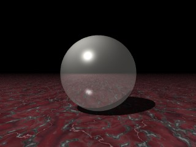

Formation POV #5: Textures
Utilisation de textures prédéfinies
De même que colors.inc contient des définitions de couleurs, il existe des
fichiers contenant les définitions de textures entières.
POV fournit ainsi en standard glass.inc, golds.inc, metals.inc, stones1.inc,
stones2.inc, textures.inc et woods.inc. Les textures qui y sont définies sont
accompagnées d’une brève description.
Attention : Ces textures utilisent les couleurs définies dans colors.inc, qu’il faut donc inclure au préalable (cf. exemple ci-dessous).
Par exemple, pour faire une sphère d’argent sur un plan de marbre : j’ouvre metals.inc, repère le pigment P_Silver3 et le finish F_MetalC, qui correspondent à la texture T_Silver_3C. Puis dans stones1.inc je relève T_Stone21.
Je peux alors écrire :
#include "colors.inc"
#include "metals.inc"
#include "stones1.inc"
sphere {0,1 texture {T_Silver_3C}}
plane {y,-1 texture {T_Stone21}}
light_source {<-6,10,-8> White}
camera {
location -4*z
look_at 0
}

Mais on peut également créer ses propres textures. Comme on l’a déjà vu lors
de la 1ère scène, pigment permet de définir la couleur, finish les
propriétés lumineuses, et normal le relief.
pigment
couleur simple
Une couleur est définie par ses composantes rouge, verte et bleue (rvb, rgb en
anglais), dont les valeurs sont comprises entre 0 et 1 (ce sont des valeurs
additives, pas comme en peinture : un mélange de rouge et de vert ne donnera
pas du marron, mais du jaune). Par exemple, le rouge pur correspond à <1,0,0>,
l’orange à <1,.5,0>.
Un programme de dessin peut parfois aider à trouver les composantes de la
couleur souhaitée.
Une fois que l’on a les composantes, on applique la couleur ainsi :
sphere {0,1 pigment {color rgb <1,.5,0>}}
On peut également dans le pigment régler la transparence de l’objet, grâce à
filter : l’objet est opaque pour une valeur nulle, totalement transparent
pour une valeur de 1. Par exemple :
sphere {0,1 pigment {color rgb <1,.5,0> filter .4}}
Note : La lumière qu’on laisse passer avec un filter est filtrée : on verra rouge à travers un objet rouge. Le mot transmit, qui s’utilise comme filter, permet de faire passer de la lumière non filtrée.
motif
Une couleur unie c’est bien joli, mais ce n’est pas avec ça que l’on va
pouvoir faire du marbre.
C’est pourquoi on peut faire des motifs. Il y en a une trentaine, décrits dans
la documentation (section Patterns).
Nous prendrons comme exemple le motif marble.
Un tel motif produit des dégradés de couleurs, définis dans le color_map.
Dans celui-ci, on spécifie des points de contrôle qui à des valeurs
comprises entre 0 et 1 associent une couleur donnée. Les couleurs
intermédiaires sont obtenues par extrapolation linéaire. Cela sera sans doute
plus clair sur un exemple :
Dans l’image ci-dessus le pigment est :
pigment {marble
color_map {[0 rgb <.5,.3,0>][.3 rgb <1,.9,.8>][.8 rgb .9]}
}
On précise donc la couleur en 0 : <.5,.3,0> (marron), en .3 : <1,.9,.8>
(beige) et en .8 (ce sera alors la couleur entre .8 et 1) : .9 pour <.9,.9,.9>
(gris clair). Le motif associe à chaque point une valeur comprise entre 0 et
1, puis le color_map permet de déterminer la couleur du point.
On voit que le motif marble correspond à des plans uniformes parallèles à
(y0z), avec une couleur variant suivant x.
Comme c’est peut-être un peu trop régulier pour être réaliste, on peut ajouter
de la turbulence (0=pas de turbulence / >1=très turbulent) :
pigment {marble
color_map {[0 rgb <.5,.3,0>][.3 rgb <1,.9,.8>][.8 rgb .9]}
turbulence .4
}
Notons que l’on pourrait très bien opérer des transformations sur cette texture en insérant des scale et autres rotate avant de fermer l’accolade.
Remarquons aussi que certains motifs, comme checker (damier), ne prennent
pas un color_map mais simplement 2 ou 3 couleurs (2 pour brick ou checker,
3 pour hexagon).
finish
Le finish, qui définit les propriétés lumineuses de l’objet, est constitué de divers coefficients, dont la plupart sont décrits ici.
ambient
ambient permet de définir la luminosité d’un objet : un objet blanc non
éclairé avec un ambient à .3 aura pour couleur <.3,.3,.3>. Mais les objets
n’émettent pas de lumière pour autant.
diffuse
diffuse permet de définir la part de la lumière reçue dans la couleur de
l’objet telle qu’on la voit : avec un diffuse 0, un objet ne recevra aucune
lumière ; avec un diffuse 1, la lumière reçue sera totalement additionnée à
sa couleur (avec un risque de saturation).
specular/roughness
Ces paramètres permettent d’ajuster la tache lumineuse : specular règle son
intensité (typiquement une valeur entre 0 et 1), et roughness sa taille (de
l’ordre .01) : plus roughness est grand plus la tache est grosse.
phong/phong_size
Un peu comme specular/roughness, avec un algorithme censé être moins
réaliste. Mais si phong se comporte comme specular (valeur entre 0 et 1),
phong_size a des valeurs de l’ordre de 100, et plus phong_size est grand
plus la tache est petite (roughness .01 correspondant à phong_size 25).
Note : On utilise parfois en même temps specular pour faire une tache large et de faible intensité et phong pour faire une petite tache saturée.
reflection
reflection permet de régler la part de la lumière réfléchie dans la couleur
de l’objet, une valeur nulle correspondant à l’absence de réflexion. En
général des valeurs très petites sont suffisantes, de l’ordre de .1.
Note : Pour ajuster ces coefficients, on peut décider de répartir ambient, diffuse, specular, phong et reflection de sorte que leur somme n’excède pas 1 de trop ; autrement la lumière va saturer et on aura une grosse tache pas très esthétique (lorsque le phong sert à obtenir une petite tache saturée on le retire de cette liste).
Par exemple dans les exemples de pigment ci-dessus, le finish est :
finish {reflection .2 ambient .4 diffuse .4 phong .4 phong_size 100}
normal
normal permet de définir le relief de la surface. Non, en réalité il ne fait
que simuler ce relief en modifiant la couleur des points. L’effet est très
réaliste à condition que l’on ne demande pas un relief trop élevé, et si l’on
regarde le profil de l’objet, normal le laisse inchangé.
Comme pigment, normal prend un motif, ici suivi de l’amplitude du relief
(celle-ci ne correspond pas à grand-chose ; le mieux est de faire des essais),
et là où les valeurs entre 0 et 1 faisaient référence au color_map, elles
désignent maintenant l’altitude des points (en fait il est possible d’utiliser
un slope_map mais nous ne détaillerons pas ici).
Pour s’en rendre compte, on peut utiliser le même motif pour le pigment et pour le normal :
interior
Lorsque un objet est transparent, il peut réfracter, c’est-à-dire dévier, la
lumière qui le traverse. On spécifie le coefficient de réfraction (1 pour
l’air, 1.5 pour le verre) dans le interior :
interior {ior _coefficient_}
On peut en fait mettre beaucoup plus de choses dans le interior, mais qui ne
rentrent pas dans le cadre de cette première approche (cf. la section Media
de la documentation).